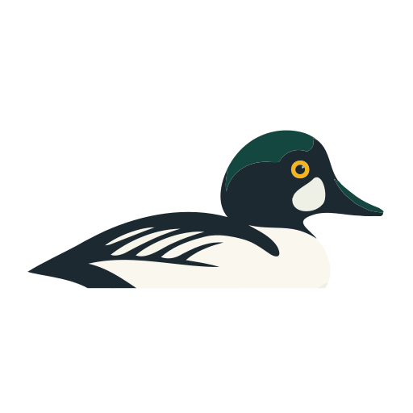

Dina pass
0

Din rutin
Ett kort pass i taget, i din egen takt.
Ditt upplägg
Öppna ett steg för att se dagens fokus, läge och hur länge du kan stanna där.
Nu tränar du
Knip 1 av 10
Gör dig redo
Färdig för idag
Passet är sparat på din enhet.
Översikt
Dina pass
0
De senaste 7 dagarna
0
Senaste passet
Inte genomfört ännu
Historiken sparas endast i den här webbläsaren.
Ditt upplägg